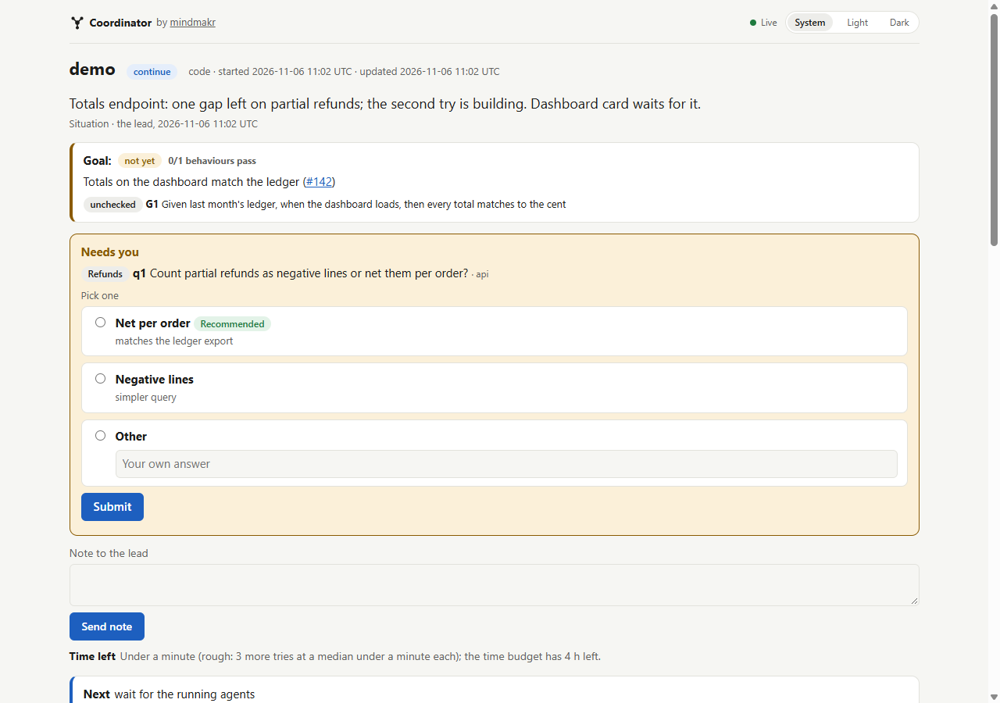

Lead story
One person, a team of agents, and nobody marking their own homework
Coordinator asks every question before the work starts. Then it runs builders and blind critics, unattended, until the work meets a bar you can check. It stops when its rules say stop, writes everything down, and carries what it learned into the next run.
A single coding agent grades its own work. It decides the job is "fine", stops early, drifts into side quests, and asks you a question halfway through, usually while you are away. Coordinator gives that agent a lead to answer to.
The lead does not build and does not grade. At the start of a run it reads the project and the task, researches references, picks agents for each role from the ones your harness already has, and asks you every open question in one batch, with its recommendation first. Your answers, including standing permissions such as "merge into dev when the review says ready", go on the record.
Then you can leave
Builders work in parallel where the pieces are independent, each in its own git worktree. A fresh critic, who never sees the builder's reasoning, checks the real result against a bar written before anyone started: a failing test that must pass, a reference to match, an acceptance list. A pass without evidence counts as a fail.
A small script, run.mjs next, decides what happens to each piece: build again, change strategy, or stop. It refuses steps taken out of order. A second script, detect.mjs, reads the diff for the usual ways to fake a green run: skipped or deleted tests, removed assertions, rewritten snapshots, suppressed checks.
Hard stops, in code
Rounds and time have budgets. A run also stops when it makes no progress, when the same root cause comes back after a change of strategy, when a stacked piece is blocked, or when new scope passes its cap. A stopped piece is reported as stopped, with its last gap. Merging, deploying, deleting, spending or posting needs your approval, given up front.
Nothing lives only in memory
Every run is a JSON file, written atomically behind a lock, with a readable workbench.md beside it. A crash or a context reset resumes from the file. When the run ends, a retro turns repeated gaps into lessons, tunes the budgets from past runs, and, with your approval, sends gaps in the skill itself back to this project as issues.
The dashboard is a web page
You don't need a purpose-built GUI app to watch a team of agents. Each run has its own dashboard in any browser: the situation in plain words, a Needs you box with the lead's recommendation, a rough time left, then every piece of work, its scores, budgets and a timeline. run.mjs serve serves it live on your own machine, updating in place as the run moves, with answer forms so you can reply to the lead while it works. hud.html beside the state is a static snapshot you can open from disk.
